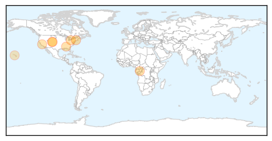

30 Day Trends
Web: 0 alerts, 0 warnings
Twitter: 0 alerts, 0 warnings
Top Articles:
- 1.000
- How Ebola Compares With Other Diseases
- 0.997
- When the flu wiped out millions
- 0.996
- State health officials say flu season is officially here
- 0.995
- Gear up for flu shots, Summit County health officials ask residents
- 0.963
- Flu season arrives in Erie, Crawford counties
- 0.948
- Doctor stresses importance of flu shots
- 0.934
- The Hidden Dangers of Over-Vaccination
- 0.765
- Stop Flu at School vaccination clinics begin
Top Tweets:
-
No tweets found for Nov 10, 2014
Web/News Articles

Tweets

Article Locations
Article Confidences